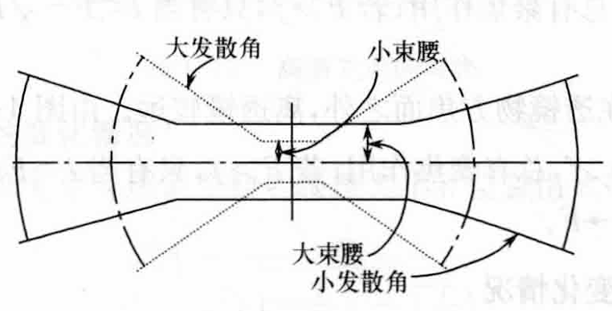

对于准直应用，需要在相当长的范围内使光斑直径保持尽可能小.
高斯光束发散角为：
$$\theta_0 = \frac{2\lambda}{\pi\omega_0}$$可见，高斯光束光斑大小与准直长度间存在着相反的关系：

如图所示：腰斑小，发散角就大；腰斑大，发散角就小.
要减小发散角，必须扩大腰斑，因此，激光的准直总伴随着扩束.
设物高斯光束腰斑半径为\(\omega_0\)，其发散角为：
$$\theta_0 = \frac{2\lambda}{\pi\omega_0}$$通过焦距为\(F\)的单透镜后，像高斯光束发散角为：
$$\theta_0' = \frac{2\lambda}{\pi\omega_0'}$$由对高斯光束聚焦问题的讨论，可知：
\(l = F\)时，出射高斯光束腰斑半径\(\omega_0'\)达到极大值：
$$\omega_{0max}' = \frac{\lambda}{\pi\omega_0}F$$相应的发散角为：
$$\theta_0' = \frac{2\lambda}{\pi\omega_0'} = \frac{2\omega_0}{F}$$ $$\frac{\theta_0'}{\theta_0} = \frac{\pi\omega_0^2}{F\lambda} = \frac{f}{F}$$可见，对于焦距一定的薄透镜，当入射高斯光束的腰斑半径处于透镜后焦面（\(l=F\)），\(\omega_0'\)有极大值，因而发散角\(\theta'\)达到极小值.